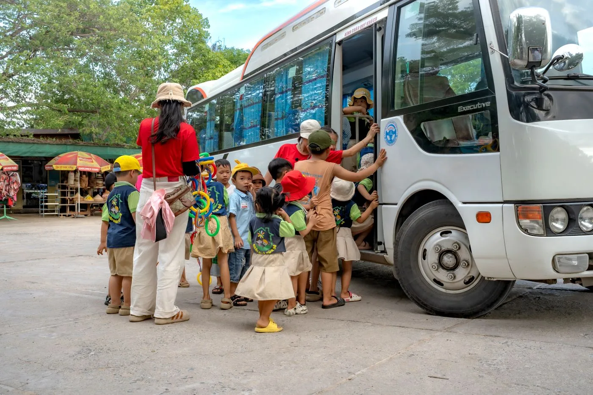
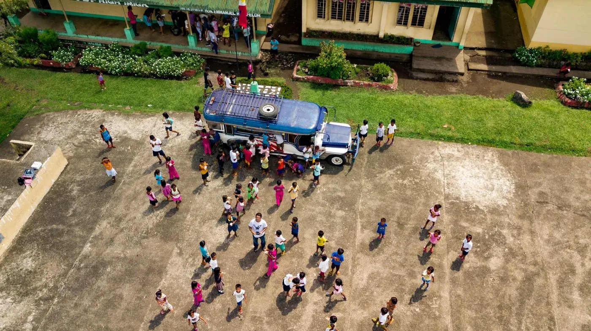

Before the journey
Review service messages and confirm the school timetable.
A clear view of what matters before pickup, at school arrival and on the way home.

Choose a stage to see the information and preparation that help the day run smoothly.
Prepare at the stop.
Complete the handoff.
Follow the collection plan.

Practice the waiting point, boarding signal and collection arrangement together before the first school day.
Explore reference routes to understand the journey. Actual schools, stops and availability are confirmed by the operator.
Switch between student profiles, review the assigned route, browse journey records and keep notices in one place.
Visit the dashboardReview service messages and confirm the school timetable.
Use your operator’s verified dispatch channel. For immediate danger, contact local emergency services.
Start with the school, your area and the journeys you need.